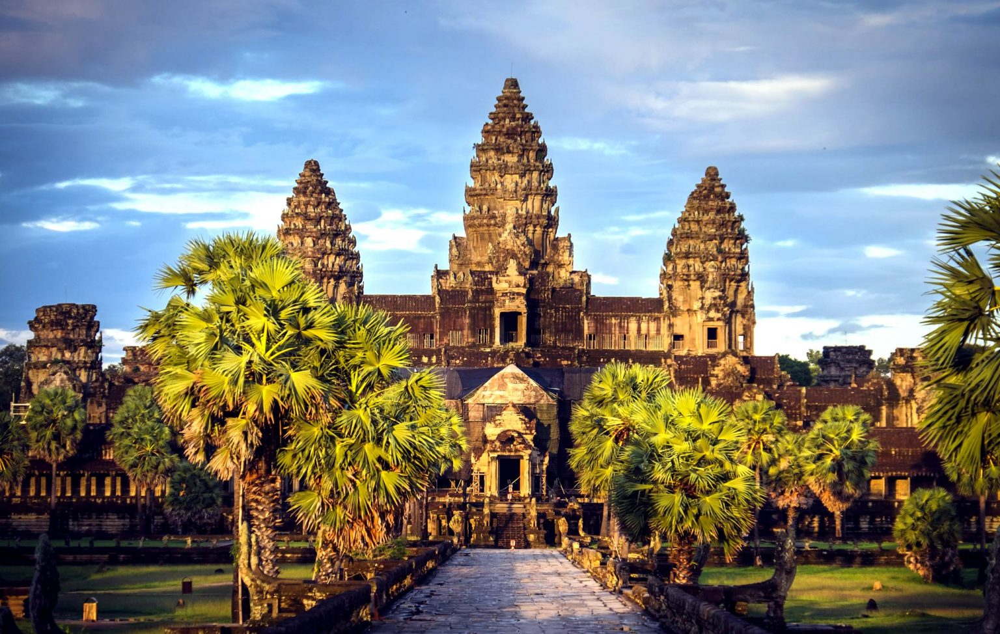
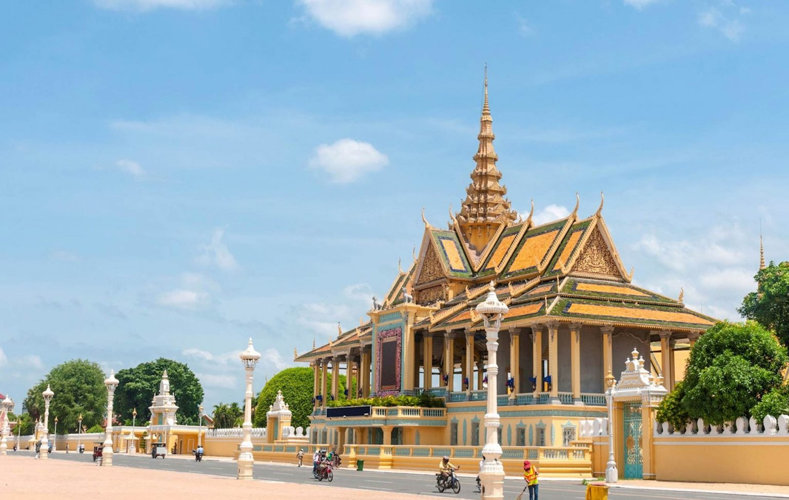

Cambodia is a destination that will captivate and inspire you with its diverse and amazing tourist attractions. You can experience the ancient and the modern, the cultural and the natural, the adventurous and the relaxing, in this beautiful and charming country. In this travel guide, we will reveal some of the best places to visit in Cambodia in 2025, but there are many more to uncover and enjoy. Are you excited to start your unforgettable journey to Cambodia?
Angkor Wat, A Must-Visit Attraction in Cambodia
Angkor Wat is a masterpiece of Khmer architecture and art, with exquisite bas-reliefs and sculptures depicting scenes from Hindu mythology and history. Angkor Wat is the most famous place and is considered a must-visit when visiting Cambodia
Journey through the sprawling temple complex, marveling at Angkor Wat’s grandeur and Ta Prohm’s mystical
ruins. Angkor Wat is the most famous and impressive of the hundreds of temples in the Angkor Archaeological
Park, a UNESCO World Heritage Site. Built in the 12th century by King Suryavarman II, Angkor Wat is a
masterpiece of Khmer architecture and art, dedicated to the Hindu god Vishnu. The temple features a stunning
five-towered structure, surrounded by a moat and a wall, and adorned with exquisite bas-reliefs and
sculptures depicting scenes from Hindu mythology and history.
Angkor Wat is best visited at
sunrise or sunset, when the light creates a magical atmosphere and the crowds are less. Ta Prohm is another
remarkable temple in the Angkor complex, famous for its overgrown and crumbling appearance, as nature has
reclaimed its territory. Ta Prohm was built in the late 12th century by King Jayavarman VII, as a Buddhist
monastery and university. The temple is known for its giant trees and roots that engulf the walls and
towers, creating a surreal and mysterious scene. Ta Prohm is also known for being featured in the movie Tomb
Raider, starring Angelina Jolie.
Banteay Srei in Sieam Reap

Banteay Srei is a 10th-century Hindu temple in Siem Reap, Cambodia, known for its intricate carvings and pink sandstone material.
Banteay Srei is a 10th-century Hindu temple in Siem Reap, Cambodia, dedicated to Shiva and
Parvati. It is
located near the hill of Phnom Dei, about 25 km northeast of the main group of temples in the Angkor
Archaeological Park. Banteay Srei is also known as the “Citadel of Women” or the “Pink Temple”, because of
its small size, its pink sandstone material, and its elaborate carvings of female deities and floral motifs.
Banteay Srei is considered to be a jewel of Khmer art, as it showcases the finest and most intricate
examples of classical Khmer sculpture and architecture.
Banteay Srei was built by two courtiers, Yajnavaraha and Vishnukumara, who were counsellors to King
Rajendravarman II. The temple was originally called Tribhuvanamahesvara, meaning “the great lord of the
threefold world”. The temple consists of three concentric enclosures, each with an entrance gate and a
library. The innermost enclosure contains the main sanctuary, which has five towers arranged in a quincunx
pattern. The sanctuary walls are decorated with scenes from Hindu mythology, such as the Ramayana, the
Mahabharata, and the Puranas. The carvings are remarkable for their depth, detail, and delicacy, as well as
their vivid expressions and gestures.
Banteay Srei is one of the most popular and impressive places to visit in Cambodia, as it offers a unique
and exquisite glimpse into the ancient and sophisticated culture of the Khmer Empire. Banteay Srei is a
hidden treasure that will marvel and enchant any visitor who appreciates art and beauty.
Phnom Penh
The Silver Pagoda is a lavish temple in the Royal Palace complex in Phnom Penh, Cambodia. It is named for its floor, which is covered with 5 tonnes of gleaming silver tiles
Discover the captivating capital, from the Royal Palace’s opulence to the poignant Tuol
Sleng Genocide
Museum. Phnom Penh is the capital and largest city of Cambodia, located at the confluence of the Mekong and
Tonle Sap rivers. Phnom Penh is a vibrant and cosmopolitan city, with a rich history and culture, as well as
a lively nightlife and food scene. One of the main attractions in Phnom Penh is the Royal Palace, the
official residence of the king and the royal family. The palace complex consists of several buildings,
gardens, and pagodas, displaying the elegance and splendor of Khmer architecture and art. The most notable
structures are the Throne Hall, where official ceremonies take place, and the Silver Pagoda, which houses a
collection of priceless Buddha statues and relics.
Another important attraction in Phnom Penh is the Tuol Sleng Genocide Museum, a former high school that was
turned into a prison and torture center by the Khmer Rouge regime in the 1970s. The museum preserves the
evidence and the memories of the atrocities committed by the Khmer Rouge, who killed nearly two million
Cambodians in their quest for a radical communist utopia. The museum displays the cells, the instruments of
torture, the photographs, and the testimonies of the victims and the survivors, offering a sobering and
moving insight into one of the darkest chapters of Cambodian history.
Koh Rong
Long Set beach is one of the most beautiful and peaceful beaches on Koh Rong, a tropical island paradise in Cambodia
Dive into turquoise waters, bask on pristine beaches, and explore vibrant nightlife at this
island paradise.
Koh Rong is the second largest island in Cambodia, located in the Gulf of Thailand, about 25 kilometers off
the coast of Sihanoukville. Koh Rong is a popular destination for travelers who seek a tropical getaway,
with crystal clear waters, white sandy beaches, and lush jungles. Koh Rong offers a variety of activities
and experiences, such as snorkeling, diving, kayaking, hiking, fishing, and zip-lining.
Koh Rong is also known for its lively nightlife, with bars, restaurants, and parties along the main beach of
Koh Touch. For those who prefer a more secluded and serene atmosphere, there are also quieter and more
remote beaches and bays, such as Long Beach, Sok San Beach, and Coconut Beach
Tonle Sap Lake
Tonlé Sap is the largest freshwater lake in Southeast Asia, and one of the most productive and biodiverse ecosystems in the world. The lake supports a rich and diverse flora and fauna, as well as the floating villages, where thousands of people live in houses, schools, shops, and temples that are built on stilts or rafts.
Cruise the serene lake, witness floating villages, and spot endangered wildlife in this
watery wonderland.
Tonle Sap Lake is the largest freshwater lake in Southeast Asia, and one of the most productive and
biodiverse ecosystems in the world. The lake is connected to the Mekong River by the Tonle Sap River, and
its size and depth vary dramatically depending on the season.
During the dry season, the lake covers about 2,500 square kilometers, and during the wet season, it expands
to about 16,000 square kilometers, flooding the surrounding forests and fields. The lake supports a rich and
diverse flora and fauna, including over 300 species of fish, as well as birds, reptiles, mammals, and
plants. Some of the endangered species that live in or around the lake are the Mekong giant catfish, the
Siamese crocodile, the Irrawaddy dolphin, and the Bengal florican.
One of the most fascinating and unique features of Tonle Sap Lake is the floating villages, where thousands
of people live in houses, schools, shops, and temples that are built on stilts or rafts. The floating
villagers are mostly fishermen and farmers, who adapt to the changing water levels and rely on the lake’s
resources for their livelihood. The floating villages offer a glimpse into the traditional and resilient way
of life of the lake’s inhabitants, as well as their culture and religion. Some of the most visited floating
villages are Chong Kneas, Kompong Phluk, Kompong Khleang, and Mechrey.
Sihanoukville
Sihanoukville is the premier seaside resort and the only deep-water port in Cambodia. It offers a variety of attractions and activities, such as beaches, islands, nightlife, and seafood
Sihanoukville is a coastal city in Cambodia and the capital of Preah Sihanouk Province. It is the country’s premier seaside resort, with a string of beaches and islands along its coastline. Sihanoukville is also the gateway to the Sihanoukville Autonomous Port, the only deep-water port in Cambodia, which connects the country to international trade and commerce. Sihanoukville offers a variety of attractions and activities for travelers, such as:
1. Relaxing on the sandy beaches, such as Otres Beach, Sokha Beach, and Ochheuteal Beach,
where you can enjoy
the sun, the sea, and the breeze.
2. Exploring the marine life, such as snorkeling, diving, kayaking, and fishing, in the clear and turquoise
waters of the Gulf of Thailand.
3. Visiting the nearby islands, such as Koh Rong and Koh Rong Samloem, where you can experience the
tranquility
and beauty of the tropical paradise, with pristine beaches, coral reefs, and jungles.
Cardamom Mountains
Cardamom Mountains are a remote and rugged destination in Cambodia, with a rich and diverse wildlife and culture. You can enjoy trekking, wildlife watching, and visiting ancient temples in this natural wonderland.
The Cardamom Mountains are a vast and verdant range of hills and forests in the southwest of Cambodia, bordering Thailand. The mountains are home to a rich and diverse wildlife, including many endangered species, such as the Asian elephant, the clouded leopard, the Siamese crocodile, and the Irrawaddy dolphin. The mountains are also a refuge for several indigenous communities, who have their own languages, cultures, and traditions. The Cardamom Mountains offer a variety of attractions and activities for travelers who love nature and adventure, such as:
1. Trekking through the lush and scenic trails, where you can encounter waterfalls, rivers,
caves, and
wildlife.
2. Visiting the community-based ecotourism projects, such as the Osoam Community Center, the Chi Phat
Wildlife
Sanctuary, and the Elephant Valley Project, where you can learn about the conservation and education
efforts, and support the local livelihoods.
3. Exploring the hidden and ancient temples, such as Prasat Preah Vihear, Prasat Thom, and Prasat Ta Moan,
which are located on the border with Thailand, and offer stunning views and architectural wonders.
4. Cruising along the coastal and inland waterways, such as the Koh Kong Bay, the Tatai River, and the Stung
Atay River, where you can enjoy the serene and scenic landscapes, and spot dolphins, birds, and fish.
The Cardamom Mountains are a destination that will amaze and inspire you with their natural beauty and cultural diversity. You can experience the wild and authentic side of Cambodia, and discover a hidden gem in Southeast Asia.
Preah Vihear Temple

Preah Vihear temple is an ancient Khmer temple that was built by the Khmer Empire and is on the top of a 525-metre (1,722 ft) cliff in the Dângrêk Mountains, in the Preah Vihear province, Cambodia.
Preah Vihear Temple is an ancient Khmer temple that was built by the Khmer Empire and is on
the top of a
525-metre (1,722 ft) cliff in the Dângrêk Mountains, in the Preah Vihear province, Cambodia. The temple is
dedicated to Shiva, one of the main Hindu gods, and features a series of sanctuaries linked by a system of
pavements and staircases over an 800 metre long axis. The temple dates back to the 11th century AD, but its
complex history can be traced to the 9th century, when the hermitage was founded. The temple is a
masterpiece of Khmer architecture and art, with exquisite carvings and sculptures depicting scenes from
Hindu mythology and history. The temple also offers breathtaking views of the plain of Cambodia, which is
now cut off by the international border with Thailand.
Preah Vihear Temple is a destination that will impress culture enthusiasts, adventure seekers, and history
buffs alike. Culture enthusiasts can admire the beauty and elegance of the temple, and learn about the
religious and artistic significance of its design and decoration. Adventure seekers can enjoy the thrill and
challenge of climbing the steep and narrow stairs to reach the temple, and explore the surrounding natural
environment. History buffs can discover the fascinating and turbulent history of the temple, which has been
a source of dispute and conflict between Cambodia and Thailand for decades. In 1962, the International Court
of Justice ruled that the temple belongs to Cambodia, and in 2008, the temple was listed as a UNESCO World
Heritage Site. However, the border dispute remains unresolved, and the temple is sometimes closed to
visitors due to security reasons.
Preah Vihear Temple is one of the best places to visit in Cambodia, as it showcases the glory and the
mystery of the Khmer Empire, as well as the beauty and the charm of the Cambodian landscape. It is a place
that will inspire and awe you with its natural and cultural wonders.
Kampot & Kep
Kep and Kampot are two charming and relaxed towns in the south of Cambodia, known for their colonial architecture, natural scenery, and culinary delights. You can visit the pepper plantations and the crab market, enjoy the beaches and the waterfalls, explore the temples and the national park, and cruise along the rivers and the coast
Unwind in laid-back riverside towns, savor fresh seafood, and cycle through pepper
plantations and salt fields.
Kampot and Kep are two charming and relaxed towns in the south of Cambodia, located along the coast and the
river. Kampot and Kep are known for their colonial architecture, their natural scenery, and their culinary
delights.
Kampot is a riverside town that has a laid-back and bohemian vibe, with cafes, bars, and art galleries.
Kampot
is also famous for its pepper, which is considered to be one of the best in the world. You can visit the
pepper
plantations and learn about the history and production of this spice, as well as taste some of the dishes
that
use it, such as the Kampot pepper crab. You can also enjoy the scenic views of the river and the mountains,
and
take a boat trip or a kayak tour to explore the mangroves and the islands.
Kep is a seaside town that was once a popular resort for the French and the Cambodian elite, but was largely
abandoned and destroyed during the Khmer Rouge era. Today, Kep is a tranquil and picturesque destination,
with a
long and sandy beach, a lively crab market, and a national park. Kep is renowned for its seafood, especially
its
crabs, which are caught fresh from the sea and cooked with Kampot pepper and lime. You can also visit the
national park, which covers a hilly area with lush forests and trails, and offers panoramic views of the
coast
and the islands. You can also take a boat trip to the nearby Rabbit Island, where you can enjoy the pristine
beaches and the coral reefs.
Mondulkiri
Elephant Valley Project is an elephant sanctuary in Mondulkiri, Cambodia, where you can visit and volunteer with rescued and retired elephants in their natural habitat.
Trek through lush rainforests, spot elephants and gibbons, and immerse yourself in the
culture of indigenous
communities. Mondulkiri is the largest and most sparsely populated province in Cambodia, located in the east
of
the country, bordering Vietnam. Mondulkiri is a remote and rugged destination, with rolling hills, dense
forests, and waterfalls.
Mondulkiri is a paradise for nature and adventure lovers, who can enjoy trekking, camping, wildlife
watching,
and waterfall swimming. Mondulkiri is also home to several indigenous groups, such as the Bunong, the
Tampuan,
and the Kroeung, who have their own languages, customs, and beliefs. You can learn about their culture and
traditions, and support their community-based tourism projects, such as the Elephant Valley Project, which
is a
sanctuary for rescued and retired elephants, and the Gibbon Spotting
Cambodia is a country that offers a diverse and fascinating range of tourist attractions, from ancient
temples
and historical sites, to modern cities and cultural experiences, to stunning beaches and natural landscapes.
Whether you are looking for a cultural, adventurous, or relaxing trip, you will find something that suits
your
taste and budget in Cambodia. We have shared some of the best places to visit in Cambodia in 2025, but there
are
many more to discover and explore. We hope that this article has inspired you to plan your next trip to
Cambodia
and enjoy the beauty and charm of this amazing country. If you have any questions or comments, please feel
free
to leave them below or contact us via email. We would love to hear from you and help you with your travel
needs.
Thank you for reading and happy travels!